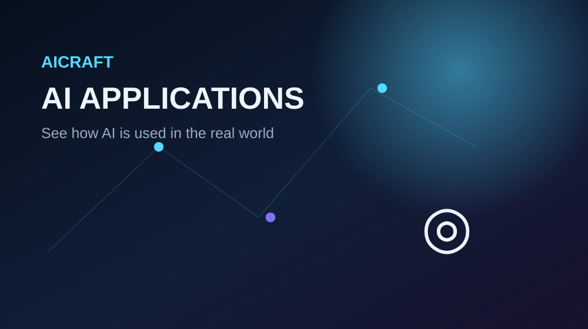

🏥
Healthcare
AI can assist with medical-image analysis, research, information organization and decision support.
AI is used in many sectors. Its exact role depends on the data, system and problem being addressed.

AI can assist with medical-image analysis, research, information organization and decision support.
Learning systems can provide personalized practice, feedback and educational recommendations.
AI can support navigation, traffic prediction, route planning and driver-assistance features.
AI can help monitor crops, analyze conditions and support agricultural planning.
AI can identify patterns, flag unusual activity and support analysis of financial information.
Recommendation systems can suggest music, films or videos based on activity and preferences.